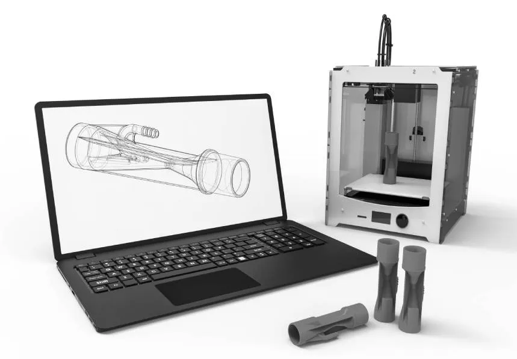
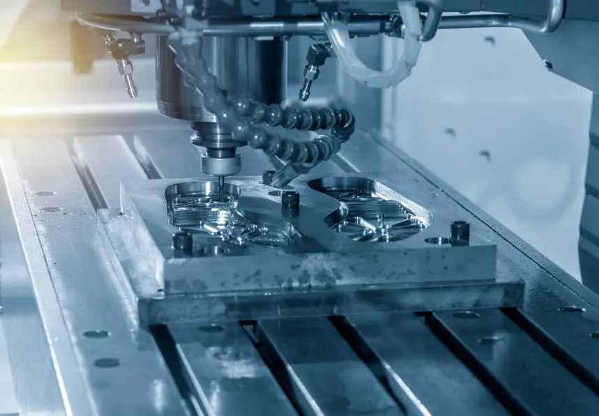
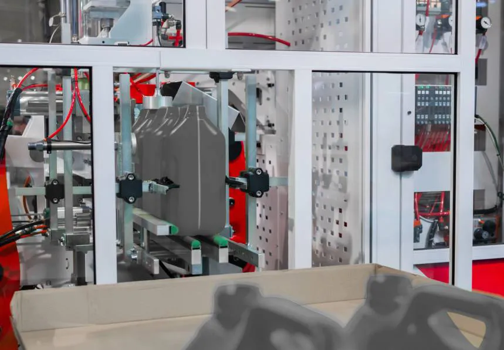

Services
Prototyping / Designing
Mediplas, your journey begins from us helping you with the design of your product. Understanding the plastic manufacturing process helps us make designs that are effective, viable, and most importantly producible. Once designs are finalized and accepted, we proceed with 3D printing mocks using our high resolution 3D printer, enabling our client to view their product without mold investment.


Services
Mold and Dies Making
Mediplas, your journey begins from us helping you with the design of your product. Understanding the plastic manufacturing process helps us make designs that are effective, viable, and most importantly producible. Once designs are finalized and accepted, we proceed with 3D printing mocks using our high resolution 3D printer, enabling our client to view their product without mold investment.
Services
Injection Stretch Blow Molding
In this process a plastic preformed PET component is formed by injection molding on the machine. This preform is then stretched and blown into the container shape using a separate mold. PET bottles and jars are noted for their glass-like clarity, strength and barrier properties that preserve the product's quality, protect against damage and display the contents superbly.


Services
Injection Blow Molding
This process bridges the gap between blow molding and injection stretch blow molding providing scrap-free production of containers with an injection molded neck finish. The key benefit is outstanding control of part tolerances, finish and weight/volume which means wide mouth containers can be produced with injection molded tolerance necks. In addition there is no waste from de-flashing resulting in reduced energy consumption and better material utilization.
Services
Customer Support
Professional customer service that exceeds expectations.Experience exceptional support for all your plastic product needs.Our dedicated team is here to provide timely assistance, ensuring your satisfaction and peace of mind.

Services
Injection Molding